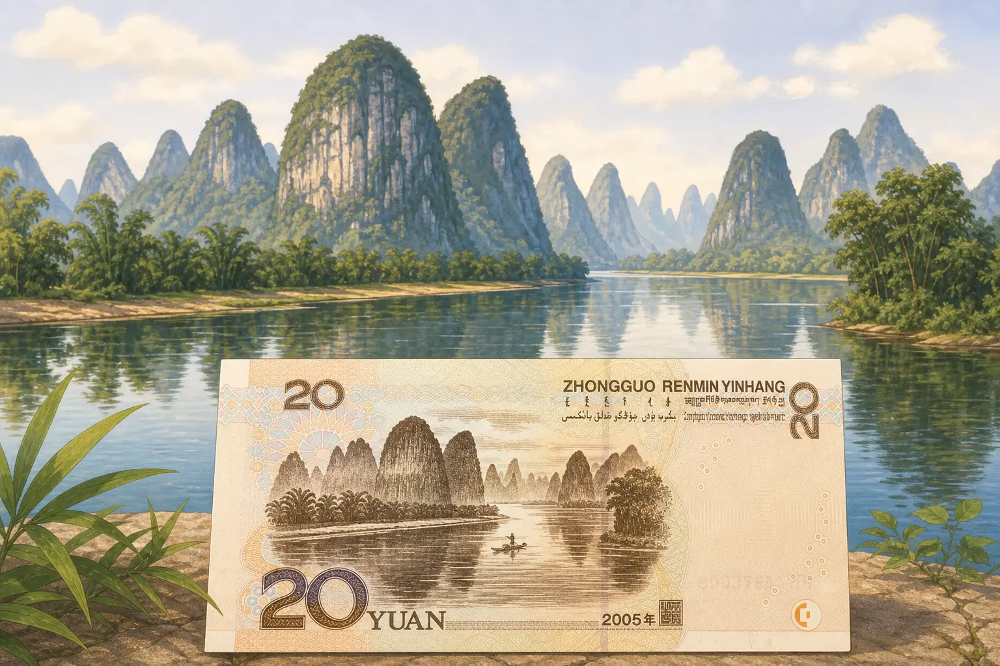
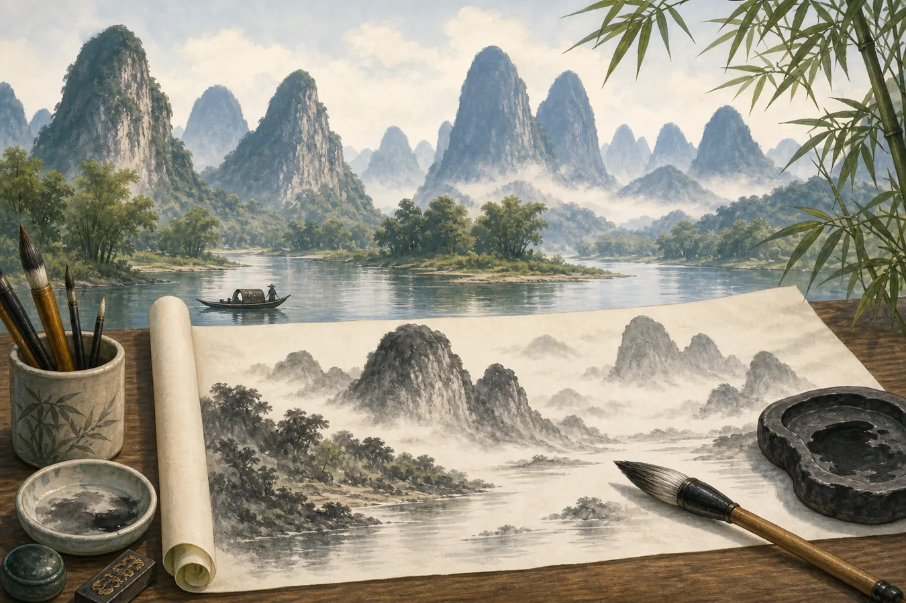

桂林：坐船走进一幅山水画
Guilin: A Boat Ride into a Landscape Painting
Page 1
二十元纸币上的山在哪里？
Where Are the Mountains on the 20-Yuan Note?

The picture on China's 20-yuan note comes from real Guilin scenery, but it was designed and engraved for the banknote.
把一张二十元人民币翻过来，背面有水、有小船，还有一座座尖尖的山。中国人民银行把这幅主景图案叫作“Guìlín · 中国南方以喀斯特山水闻名的城市。山水”。
桂林是中国南方的一座城市。Lí Jiāng · 流经桂林和阳朔喀斯特山峰之间的河流。从附近的山峰之间流过。纸币上的风景来自这里，但纸币不是直接印上去的一张照片。设计者把真实的山水变成了适合纸币的雕刻图案。
一张小小的纸币装不下整条江，却抓住了桂林最特别的样子：清清的水，窄窄的船，还有从平地突然升起来的山峰。
Turn over a Chinese 20-yuan note. On the back, you will find water, a small boat, and a row of pointed mountains. China's central bank calls this main picture “Guìlín · 桂林 · A southern Chinese city famous for its karst peaks and river scenery. scenery.”
Guilin is a city in southern China. The Lí Jiāng · 漓江 · The river that winds among the karst peaks near Guilin and Yangshuo. winds between the nearby peaks. The scene on the note comes from this real landscape, but it is not a photograph printed directly onto the money. Designers turned the scenery into a picture that could be engraved on a banknote.
One small note cannot hold the whole river. It does capture Guilin's special look: clear water, a narrow boat, and peaks that seem to leap straight out of the ground.
Page 2
船一转弯，山就换了位置
Every Bend Rearranges the Mountains

The Li River winds between the peaks. As the boat moves, the overlapping mountains keep changing shape.
坐船沿漓江向前，风景不会乖乖停在一个画框里。前面一座山刚刚挡住视线，船转过弯，后面又露出两三座。近处的山颜色深，远处的山隔着水雾，变成一层淡淡的蓝灰色。
人们还喜欢按照山峰的样子给它们起名字。一座山可能像把长鼻子伸进水里的大象，另一座可能像一支竖起来的毛笔。山还是山，好玩的地方就在于每个人都可能看见不同的形状。
许多游船从桂林附近向南开往Yángshuò · 桂林以南、漓江边被群山环绕的小城。。阳朔是漓江边的一座小城，也被群山围绕。一路上，山、树、村庄和倒影不断重新排列。纸币只能留住一小幅画，坐船的人却能看着一幅长长的画慢慢展开。
On a boat moving down the Li River, the view never stays inside one picture frame. One peak blocks the mountains behind it. Then the boat rounds a bend, and two or three more appear. Nearby hills look dark, while distant ones fade into soft blue-gray layers behind the mist.
People also enjoy naming peaks after the shapes they see. One mountain may look like an elephant dipping its long trunk into the water. Another may look like a paintbrush standing upright. The mountains are still mountains. The fun is that every passenger may notice a different shape.
Many sightseeing boats travel south from near Guilin to Yángshuò · 阳朔 · A riverside town south of Guilin surrounded by karst peaks., a small riverside town also surrounded by peaks. Mountains, trees, villages, and reflections rearrange themselves all along the way. A banknote can hold only one small picture. A passenger gets to watch a long picture slowly unfold.
Page 3
为什么坐船像在看一幅长画？
Why Does the Boat Ride Feel Like a Long Painting?

Chinese landscape paintings often unfold through layers of mountains, water, and mist, much like a journey on the Li River.
中国山水画里的“山水”（shānshuǐ），就是“山”（shān）和“水”（shuǐ）。这两个字合在一起，便成了一种画的名字。
画家不一定照着一个真实地点原样复制。他们可以移动一座山，留出一片白纸当作水雾，再用深浅不同的墨画出远近。有些山水长卷还要从一端慢慢打开。看画的人先遇见一条小路，再看见河流，最后才发现藏在远处的山。
坐船看漓江也有这样的节奏。船还没有到下一个弯，你不知道后面藏着一座山、一个村子，还是一片安静的水面。船每转过一道弯，就出现一幅新景色，就像山水长卷正在一点点打开。
The Chinese word for landscape painting is shānshuǐ (山水). Shān (山) means “mountain,” and shuǐ (水) means “water.” Together, the two words name a kind of painting.
An artist does not always copy one real place exactly. A mountain can be moved. Blank paper can become mist or water. Light and dark ink can make some peaks look near and others far away. Some landscape scrolls are opened slowly from one end. The viewer meets a small path, then a river, and only later discovers mountains hidden in the distance.
A boat ride on the Li River has the same rhythm. Before the boat reaches the next bend, you do not know whether a peak, a village, or a quiet stretch of water is waiting there. Each turn reveals a new scene, just as a long landscape scroll opens one section at a time.
Page 4
这些山为什么像石头高塔？
Why Do the Peaks Look Like Stone Towers?
桂林的山大多由石灰岩组成。很久以前，这些岩石的材料沉积在古老的海洋里。后来，地面慢慢抬高，厚厚的岩层里出现了裂缝。
雨水穿过空气和泥土，会带上一点很弱的酸。水钻进裂缝，一点一点溶解石灰岩。地下的裂缝变成洞穴，地面的低处也被流水慢慢带走。留下来的岩石便成了一座座陡峭的山峰。
这种地形叫喀斯特地貌。美国也有喀斯特地貌。肯塔基州的猛犸洞国家公园（Mammoth Cave National Park）有世界上最长的已知洞穴系统。那里的地面不像桂林一样立着许多石塔，但两个地方都有石灰岩，也都有水在地下慢慢开出洞穴。
Most of Guilin's peaks are made of limestone. Long ago, the material in this rock collected in an ancient sea. Later, the land slowly rose, and cracks opened through the thick layers of stone.
As rainwater passes through air and soil, it picks up a tiny amount of weak acid. The water slips into cracks and slowly dissolves the limestone. Cracks underground grow into caves, while flowing water wears away lower ground. The rock left behind rises as steep peaks.
This kind of land is called karst. The United States has karst too. Mammoth Cave National Park in Kentucky contains the world's longest known cave system. Its surface does not look like Guilin's forest of stone towers, but both places have limestone and water slowly opening caves underground.
Page 5
山里面还藏着什么？
What Is Hidden Inside the Mountains?

Stalactites hang from the ceiling, while stalagmites grow from the floor. Colored visitor lights brighten the cave.
水在山里开出洞穴以后，还会继续改变洞里的样子。它从石灰岩里带走一点矿物，又把一些矿物留在洞顶。日子久了，洞顶便垂下一根钟乳石。
水滴落到地上，也会把矿物留在下面。地面上的石笋一点点向上长。要是钟乳石和石笋终于碰到一起，就会连成一根石柱。它们生长得很慢，不同洞穴里的速度也不一样。
游览洞穴里的彩灯可以把石头照成红色、蓝色和金色。石头本身不会发光。真正神奇的是一滴滴普通的水：它在地面上留下桂林的石塔，又在山里面造出安静的洞穴和石柱。
After water opens caves inside the mountains, it keeps changing them. It carries a little mineral out of the limestone, then leaves some of that mineral on the cave ceiling. Over a long time, a stalactite begins to hang down.
Drops that reach the floor leave mineral there too. A stalagmite slowly grows upward. If the two finally meet, they form one stone column. These formations grow slowly, but the speed is different in every cave.
Colored lights in a visitor cave may turn the rock red, blue, or gold. The stone does not glow by itself. The true wonder comes from ordinary drops of water. Above ground, water helps shape Guilin's stone towers. Inside the mountains, it makes quiet caves and columns.